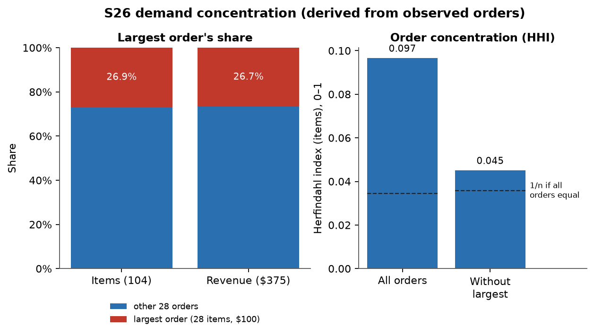
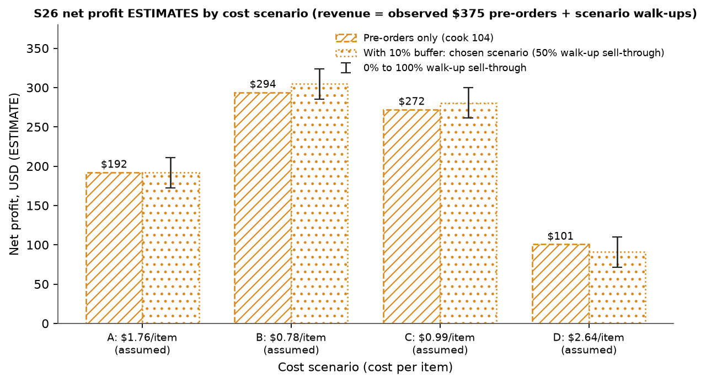

Applied analytics / Operations / Student leadership
From pre-orders
to a defensible
production plan.
How much extra food should a student fundraiser make when demand, costs, and volunteer capacity are uncertain?
Explore the tradeoff Inspect the evidenceObserved: Spring 2026 order form. Revenue alone does not establish profit.
01 / Problem & ownership
A real operating problem.
Incomplete evidence.
My role
As AWAKE's Finance/Social Leader, I introduced an online pre-order form with day-of pickup to help plan food production. The original project account reports that subsequent leaders continued this process.
What this project adds
This later, retrospective project turns the available ledger and order records into a tool for comparing production buffers, cost assumptions, and possible net proceeds. It separates records from assumptions so leaders can see what a decision depends on.
The operational change and the analytical tool are distinct. Continued use of the pre-order process does not establish adoption of this app. Historical production and leftovers were not recorded, so the available data cannot quantify waste reduction or establish a causal profit improvement.
02 / Decision insight
Extra production needs to earn its place.
Pre-orders establish a committed quantity. Any extra food adds both an opportunity for walk-up sales and a risk of unsold inventory.
Sell-through needed for an extra item to cover its cost
Historical proxy cost ($190 ÷ 108) ÷ assumed walk-up price ($3.50). Applying a previous menu's cost to a new event is an assumption.
A 10% buffer adds 11 items. At 50% sell-through it changes net by about −$0.10; with no walk-up sales, about −$19.35. If all 11 sell, about +$19.15.
Planning implication: begin with confirmed pre-orders. Choose an additional buffer only after checking current unit costs, preparation capacity, and an acceptable downside. These records do not establish a universally optimal buffer or price.
03 / Interactive decision support
Choose the assumptions.
See the consequences.
Compare a chosen production plan with making only the pre-orders. Every output below is conditional on the inputs.
This evaluates your chosen buffer; it does not optimize production or forecast demand. Fractional sales represent scenario averages. Costs, pre-order payment and fulfillment are held fixed across the sell-through cases. The 0% and 100% cases do not bound cost overruns, cancellations, or spoilage.
04 / Evidence & judgment
What the records support.
| Evidence | Finding | Decision / limitation |
|---|---|---|
| DERIVED Historical event P&L | F24 net: $234.54 S25 net: $182.00 | F24's ledger memo reports $261.13. The $26.59 difference remains unresolved; transaction-based net is primary. Including the separately classified $75 parking fine reduces it to $159.54. |
| DERIVED Order concentration | One order: 28 of 104 items (26.9%); $100 of $375 revenue (26.7%). | Confirm unusually large orders before committing purchases. One event cannot establish how frequent such orders will be. |
| OBSERVED Timing and prices | 12 orders arrived March 2–3. One-item orders show $7; one four-item order shows $15 rather than $14. | The cause of the late order cluster and the pricing anomalies is unknown. Do not attribute them to reminders or turn them into an optimized price list. |
| SCENARIO S26 profitability | About $101–$294 if exactly 104 items were produced, across four assumed cost cases. | Costs, actual production and walk-up sales are missing. This is a scenario range, not actual profit or a statistical confidence interval. |
View the demand concentration figure

View the cost and buffer scenarios

05 / Method & next test
Make uncertainty visible.
Then collect what matters.
- Reconcile the records.
Hand-transcribed, anonymized CSVs feed SQLite queries. Eight aggregate checks reproduce the source totals; unresolved discrepancies remain visible. - Evaluate conditional decisions.
Production is rounded up; every cooked item incurs cost. Compare the extra buffer's revenue and cost with a pre-order-only baseline. - Stress the assumptions.
Vary unit cost, buffer and sell-through. Two costed events and one pre-order event are insufficient to justify a demand model. - Validate at the next event.
Record actual costs, production, walk-up sales, leftovers, preparation hours and realized net. Compare plan versus actual before claiming operational impact.
What I learned: a useful analytical answer can be a transparent decision threshold, even when the data cannot support a reliable prediction. Choosing what to measure next is part of the analysis.
06 / Review the work
Trace the result to the record.
The complete project includes the Python planner, SQL queries, source CSVs, data issues log, tests, and the spreadsheet generator. The Streamlit app provides the full historical analysis.
Development disclosure: built with AI coding assistance, including Claude. Calculations are reproducible from the included records; the applicant remains responsible for understanding and defending submitted claims. The available data files omit participant names and contact details. No quantified impact from deploying this tool is established.